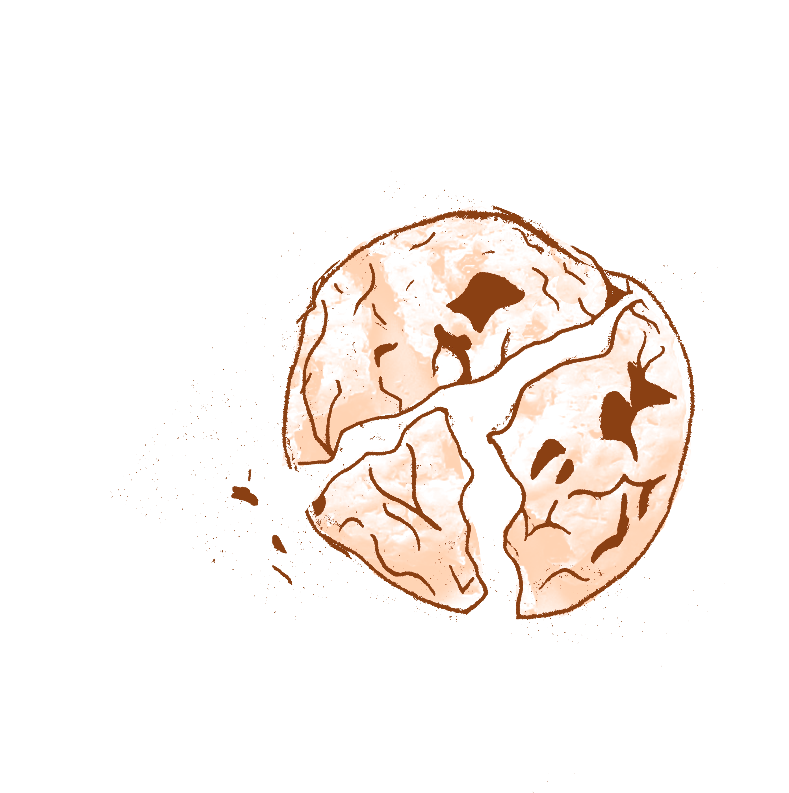
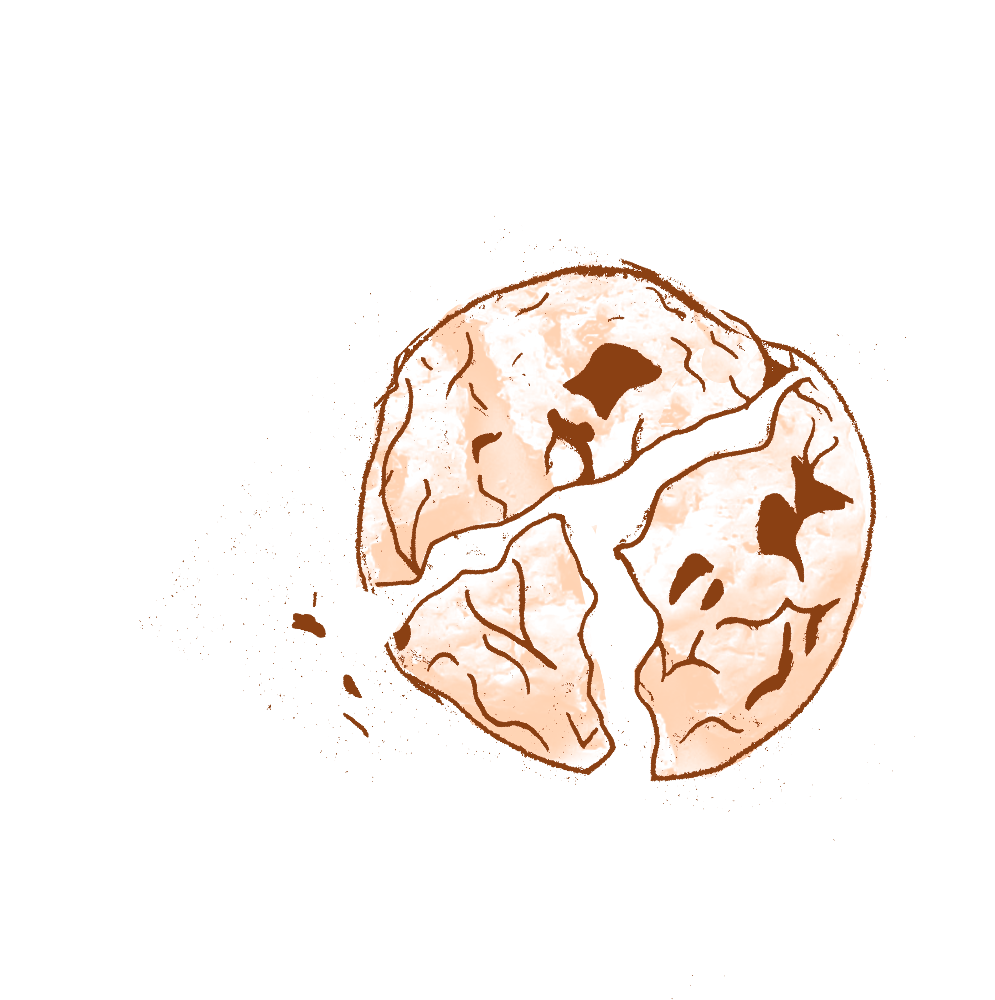

Desde siempre tuve alma emprendedora. Crecí en una familia apasionada por la cocina, lo que me llevó a especializarme en pastelería vegana desde mi adolescencia. A los 19, con mucha esfuerzo y dedicación, abrí mi primera pastelería y, solo tres años después, ya estaba inaugurando la segunda. Mi pasión por la pastelería plant-based me motivó a sumergirme más en ella, aprendiendo y experimentando con nuevas recetas.
Hoy, me enorgullece tener una academia online que ha formado a más de 3,900 estudiantes y tener 480 alumnos que participan en mis clases presenciales.
Sumarte a mis cursos es una inversión en tu educación, pero también es ahorrar tiempo y dinero, ya que te doy todas las herramientas y recetas que necesitás para que al día siguiente ya estés poniendo manos a la obra. Si estás buscando empezar o querés profundizar tus conocimientos en la pastelería vegana, te invito a que te sumes.


 
